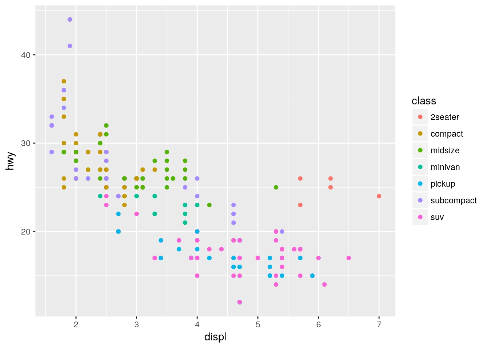
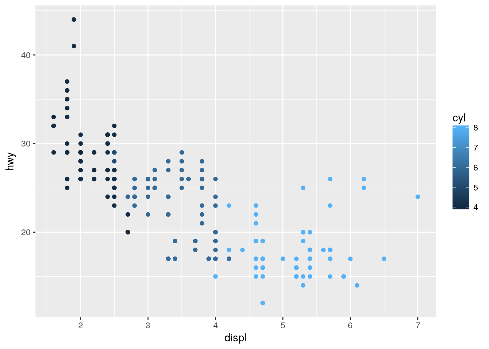
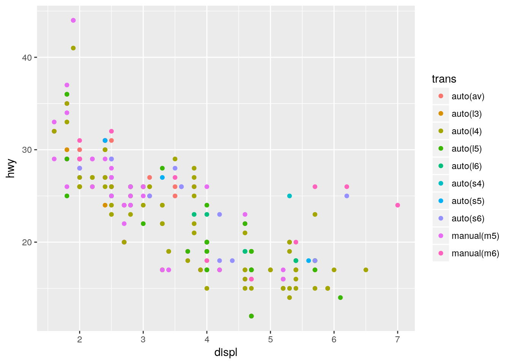
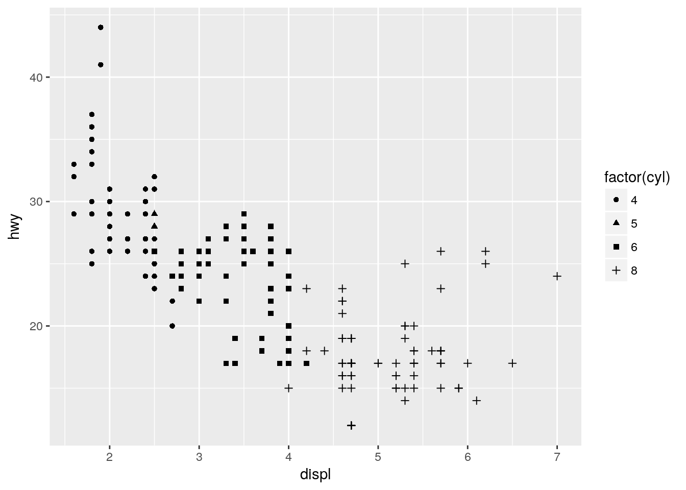
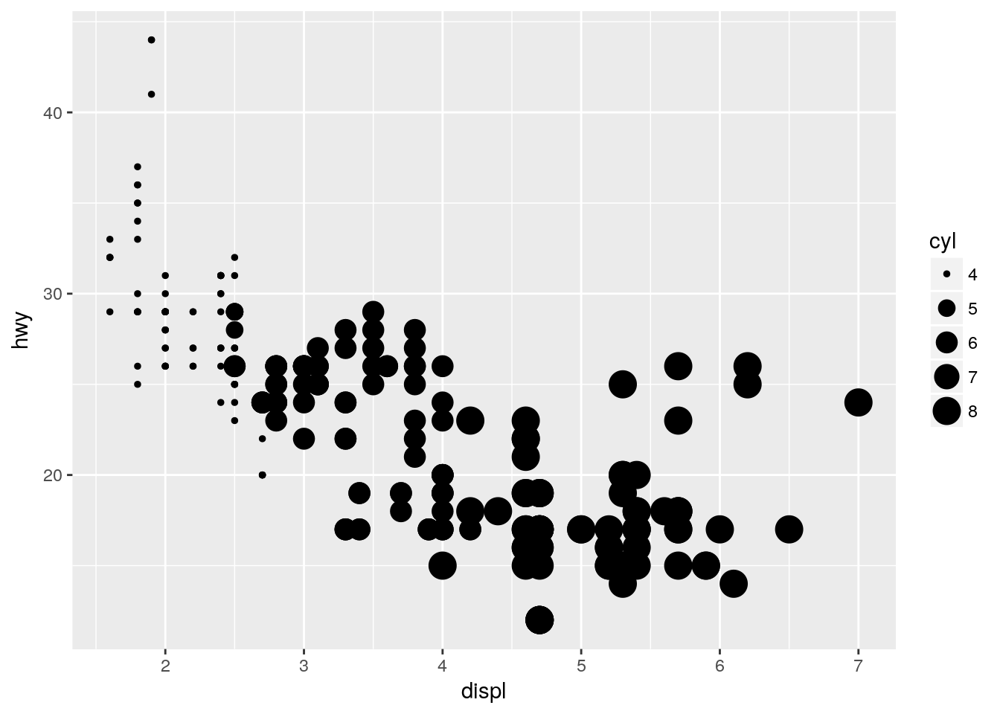
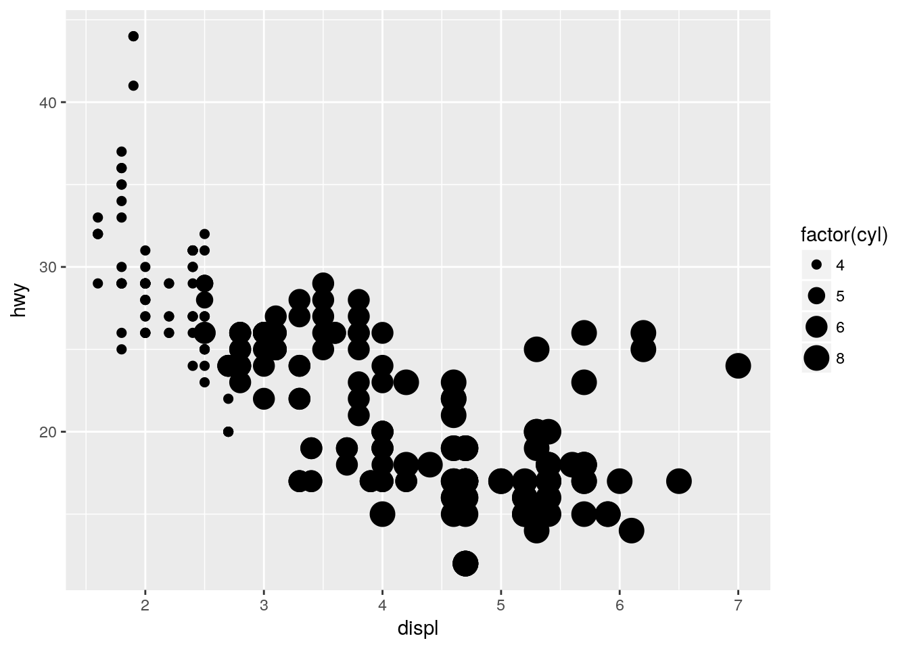
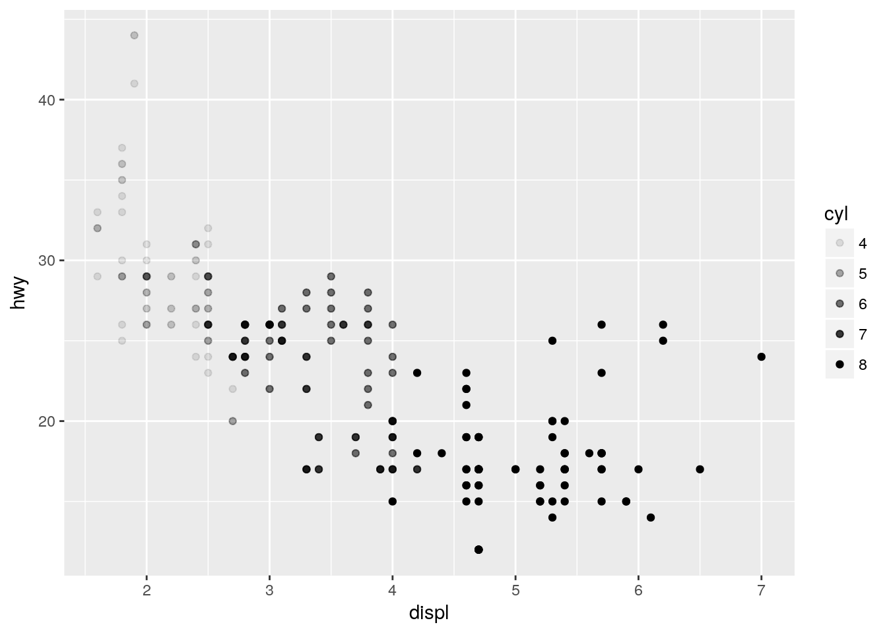
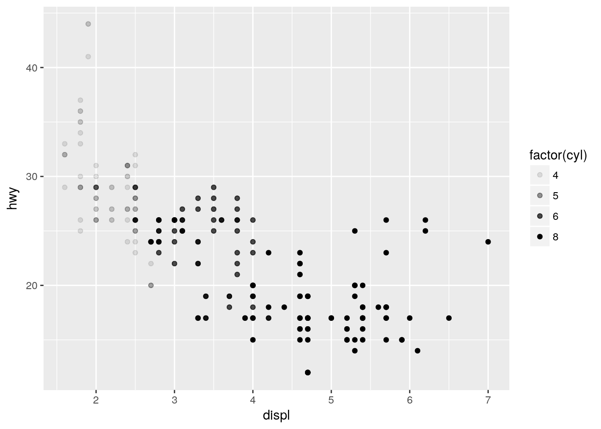
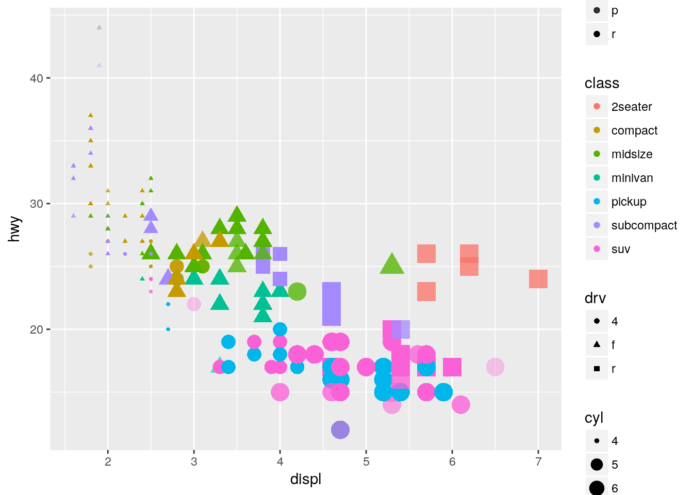
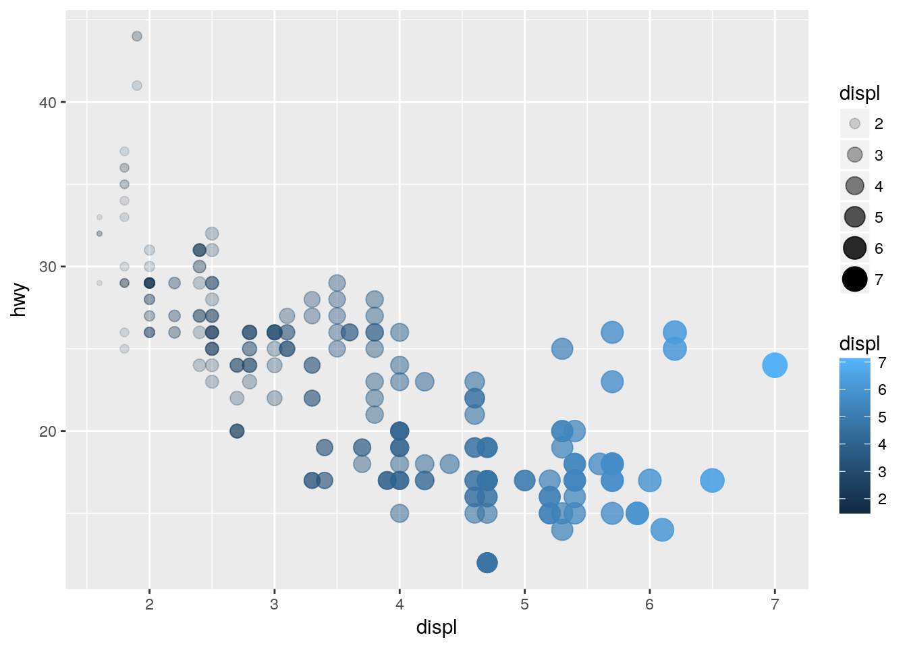

Scatterplots with three variables
Kirill Müller
June 1, 2017
Map to the color aesthetic
Simply insert color = <var> in the aes() call, where <var> is a variable in the mpg dataset:
ggplot(data = mpg) +
geom_point(mapping = aes(x = displ, y = hwy, color = class))
ggplot(data = mpg) +
geom_point(mapping = aes(x = displ, y = hwy, color = cyl))
ggplot(data = mpg) +
geom_point(mapping = aes(x = displ, y = hwy, color = trans))
ggplot(data = mpg) +
geom_point(mapping = aes(x = displ, y = hwy, color = drv))
Looks like the cars with large displacement are two-seaters with rear drivetrain.
Map to other aesthetics
The following won’t work, because cyl is stored as a continuous variable:
ggplot(data = mpg) +
geom_point(mapping = aes(x = displ, y = hwy, shape = cyl))The factor() function helps:
ggplot(data = mpg) +
geom_point(mapping = aes(x = displ, y = hwy, shape = factor(cyl)))
On the other hand, a continuous variable is fine for the “size” aesthetic…
ggplot(data = mpg) +
geom_point(mapping = aes(x = displ, y = hwy, size = cyl))
…which isn’t recommended (but still works) for a categorical variable:
ggplot(data = mpg) +
geom_point(mapping = aes(x = displ, y = hwy, size = factor(cyl)))## Warning: Using size for a discrete variable is not advised.
The “alpha” aesthetic controls transparency, and accepts both kinds of variable:
ggplot(data = mpg) +
geom_point(mapping = aes(x = displ, y = hwy, alpha = cyl))
ggplot(data = mpg) +
geom_point(mapping = aes(x = displ, y = hwy, alpha = factor(cyl)))
Change more than one aesthetic
You can change any number of properties of a geom at your discretion, this is one of ggplot2’s strenghts.
ggplot(data = mpg) +
geom_point(mapping = aes(
x = displ,
y = hwy,
color = class,
size = cyl,
shape = drv,
alpha = fl
))
A legend is added automatically. It may not be as useful to change all properties at the same time, but it’s very easy to assign a variable to a different aesthetic, or use another variable for that aesthetic.
Map a variable to more than one aesthetic
There are no restrictions on how many times a variable is mapped in any given plot:
ggplot(data = mpg) +
geom_point(mapping = aes(
x = displ,
y = hwy,
color = displ,
size = displ,
alpha = displ
))
Mapping the same variable to two aesthetics is sometimes useful to further emphasize this variable.
Copyright © 2017 Kirill Müller. Licensed under CC BY-NC 4.0.